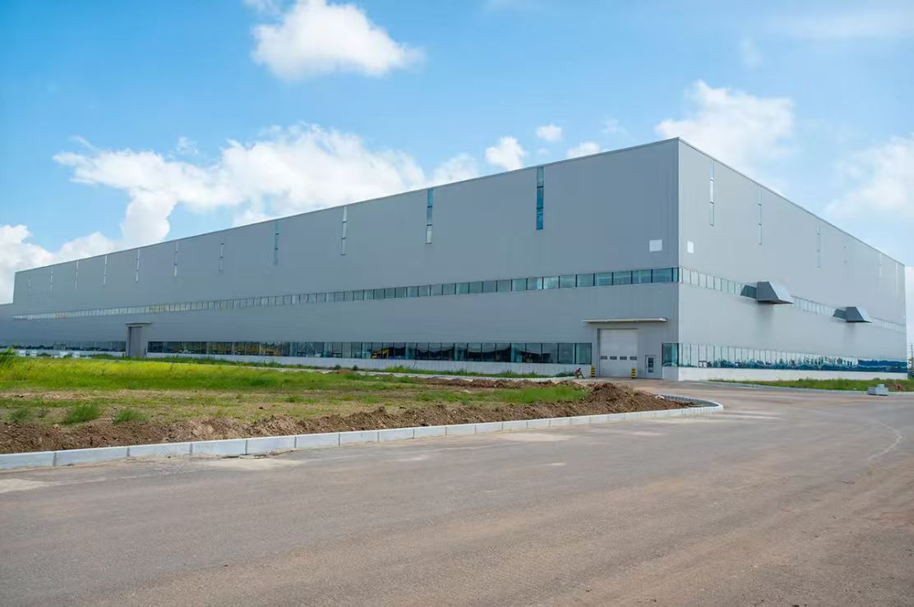

【客户背景】莱西市黑玉珍花生加工厂是青岛莱西本地一家专注花生加工的食品企业，地处胶东半岛花生传统优势产区。莱西花生是国家地理标志农产品之一，皮薄、粒饱、出油率高，长期是山东花生加工产业链的关键原料。加工厂围绕莱西本地花生做筛选、烘烤、油炸、调味、休闲化深加工，下游对接商超、便利店与电商渠道。
【产业定位】莱西花生产业近年来持续推动"0.7 克小花生"等品种与品质升级，把传统大田作物转化为高附加值的休闲零食原料。地方也出台专项扶持政策，把花生产业作为富民强村特色产业。加工厂身处这一区域产业升级背景中，既享有产地原料与政策红利，也面对从"原料供应"向"品牌化产品"转型的能力挑战。
【服务方式】华认联国际项目组以"小型食品加工厂的精益运营"为切入点，结合企业规模与团队特点，把服务设计为"轻量化、可落地"的形式：与厂长、车间主任、电商运营三人核心团队一起梳理原料采购、生产排程、订单履约三条主线，输出《小型食品厂精益日计划》《电商订单与产能匹配表》《原料分等分级作业卡》等工具。
【价值落地】项目交付后，加工厂在订单响应、原料利用率、电商产品上线节奏上有了明显改善；与华认联国际的合作也由此延伸至"区域品牌打造"方向，希望借助产地优势把莱西花生从"原料标签"升级为"消费者可识别的产品品牌"。
← 返回客户案例